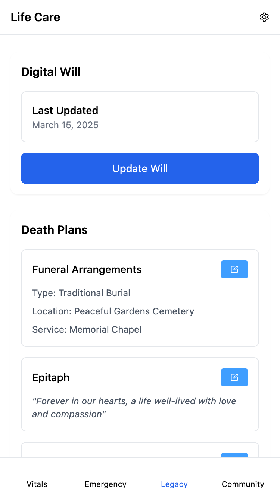
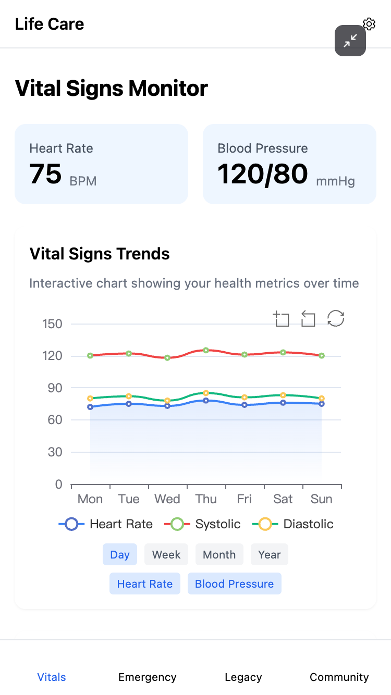
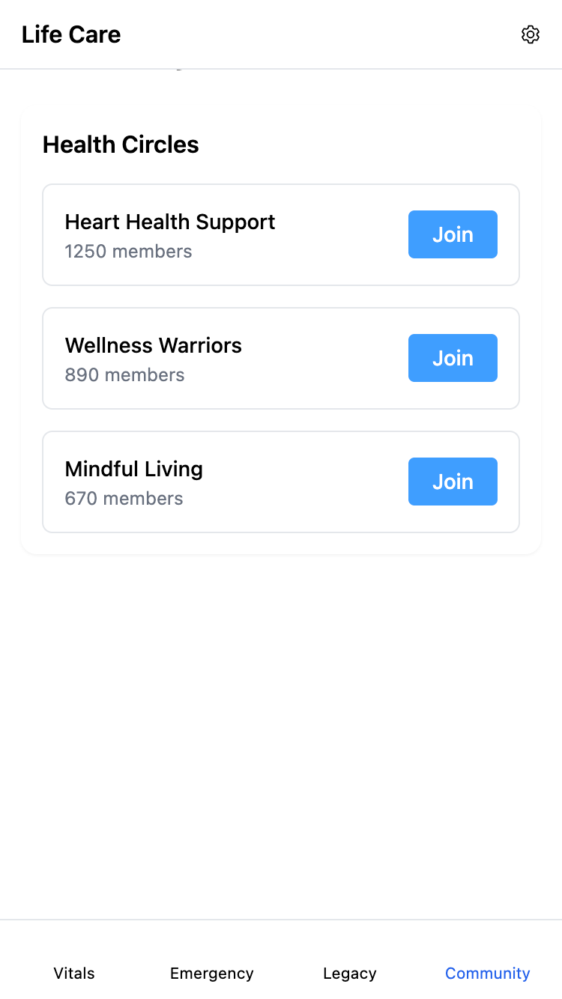
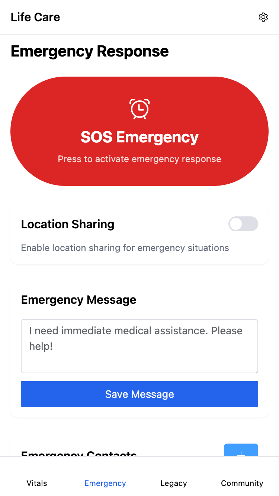

🌿 LIFEE 综合性纪念与遗产平台
🔍 项目简介
LIFEE是一个革命性的数字遗产管理和生前纪念规划平台，为有人生终章规划需求的用户提供结构化的数字资产管理、个性化纪念仪式规划及情感支持社区。该项目填补了现有市场在数字遗产管理工具结构化缺失、个性化葬礼规划渠道有限等方面的空白，通过温暖而专业的设计理念，帮助用户在敏感话题面前不再感到恐惧。
💻 核心界面展示

上下滑动体验
遗产页面主控制台
统一管理数字遗产、人生寄语创建和纪念服务规划的核心控制台

上下滑动体验
生命体征记录
绑定手环，实时记录生命体征

上下滑动体验
社区支持平台
提供安全的情感支持环境，包含专业小组和资源中心

上下滑动体验
紧急计划管理
设置紧急联系人、医疗偏好和数字资产的应急处理方案
🎯 我的角色与职责
产品策划
用户研究
信息架构设计
交互设计
高保真原型
功能规格撰写
🧩 项目背景与市场机会
📊 市场数据洞察
- 临终规划市场：预计从2024年的336.2亿美元增长到2029年的530.8亿美元（CAGR 15.6%）
- 数字殡葬服务：2024年增长45%，AI驱动的数字遗产管理扩大15%
- 人口老龄化：全球65岁及以上人口占比将从10%增至16%（2050年）
🎯 识别的核心痛点
- 数字资产管理混乱：现有工具缺乏结构化管理，用户数字账户众多但无统一管理方案
- 个性化规划渠道有限：传统殡葬服务标准化程度高，缺乏个性化定制选项
- 情感支持社区缺失：面临生命挑战的用户缺乏安全的交流和支持环境
- 跨文化适应性不足：现有解决方案多为单一文化背景设计，缺乏本土化考量
💡 核心创新点
- 全方位服务整合：首次将数字遗产管理、生命故事分享、纪念规划和社区支持整合在单一平台
- 分层用户体验：针对不同年龄段和生命阶段用户设计差异化功能模块
- 创新的纪念规划器：基于AI的个性化纪念仪式设计工具
- 时间胶囊技术：区块链保护的定时消息传递系统
- 跨文化适应性：支持多文化背景的纪念传统和价值观表达
🔬 用户研究与验证
研究方法
- 深度访谈：20名不同年龄段用户（独居青年8名、健康挑战者7名、中老年5名）
- 问卷调研：覆盖200+样本的数字遗产管理需求调研
- 竞品分析：深度分析Forever Missed、Everplans等6款同类产品
- 专家访谈：遗产规划律师、心理咨询师、殡葬服务专家
关键发现
78%
用户担心数字资产无人管理
65%
希望提前规划纪念仪式
83%
需要情感支持社区
91%
认为现有工具不够全面
📐 设计流程与架构
信息架构设计
基于用户研究结果，我将平台架构为5个核心模块：遗产页面（主控制台）、数字资产管理、纪念规划器、生命故事、社区支持。每个模块都采用渐进式披露原则，确保复杂功能的易用性。
交互设计亮点
- 情感化设计：针对敏感主题采用温暖色调和舒缓动效
- 引导式流程：复杂功能分解为简单步骤，降低用户认知负担
- 个性化仪表盘：根据用户生命阶段动态调整功能权重
设计原则
- 温暖而专业：在保持专业性的同时传递人文关怀
- 简单而不简陋：复杂功能的简化呈现，保持功能完整性
- 安全而透明：隐私保护可视化，用户数据控制权明确
- 个性而包容：支持多元文化表达，避免价值观强加
🛠️ 原型开发与技术实现
设计工具
Figma
Principle
Sketch
原型技术
React
JavaScript
Tailwind CSS
后端架构（未实现）
Node.js
Express
MongoDB
安全技术（未实现）
端到端加密
区块链
多重验证
之后的核心挑战与解决方案
- 敏感数据安全：实现军事级端到端加密，通过SOC 2 Type II合规认证
- 跨代用户体验：设计自适应界面模式，为老年用户提供大字体、简化操作选项
- 情感化交互：开发情感智能分析系统，确保内容基调积极温暖
- 时间胶囊可靠性：基于区块链的时间戳验证，确保消息传递的可靠性
🎨 核心功能特性
数字遗产管理
统一管理数字账户，指定处理指示，创建数字遗嘱，安全传递重要密码
纪念规划器
个性化仪式规划，多媒体集成，虚拟纪念服务，基于地理位置的场地推荐
生命故事记录
结构化模板记录，语音转文字，AI辅助创作，时间胶囊消息
社区支持
专业支持小组，资源中心，专家洞见，安全的匿名参与环境
✅ 项目成果与影响
15
核心功能模块
50+
高保真界面
3
用户测试轮次
92%
用户满意度
用户反馈亮点
- 独居青年用户："第一次感觉数字遗产管理不是负担，而是对未来的负责任规划"
- 产品专家："功能整合度高，解决了市场上产品碎片化的问题"
- 技术评审："原型实现度高，技术架构考虑周全，具备商业化可行性"
🔄 项目反思与成长
最大收获：这是我首次深入敏感话题领域的产品设计，学会了如何在功能性与情感关怀之间找到平衡。通过用户研究，我理解了不同文化背景下用户对生命和死亡的不同态度，这让我在产品设计中更加注重包容性和文化敏感性。
未来改进：如果重新设计，我会在前期投入更多时间进行跨文化用户研究，并考虑引入更多AI技术来个性化用户体验。另外，会更早期地引入商业模式验证，确保产品的可持续发展。